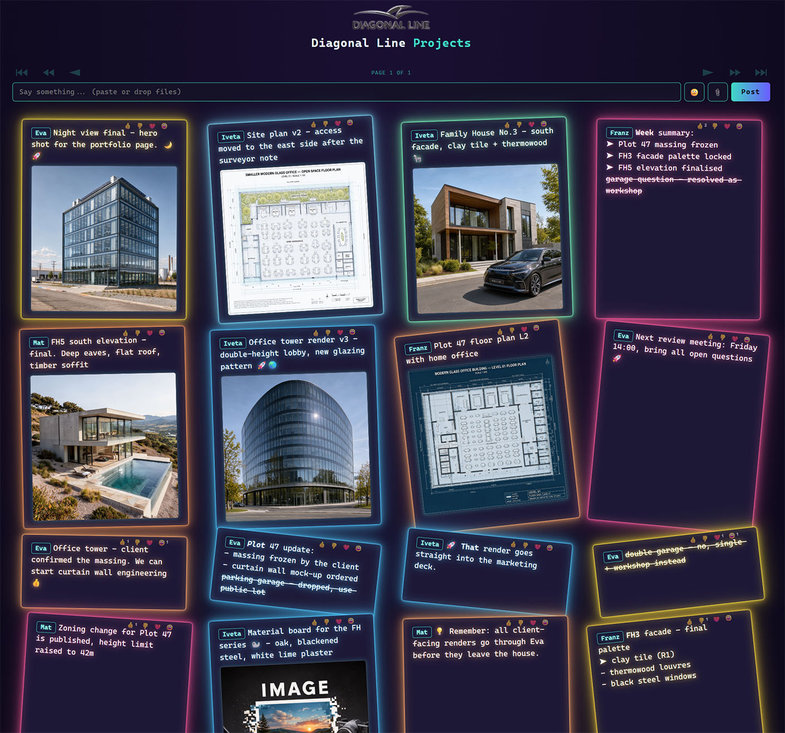
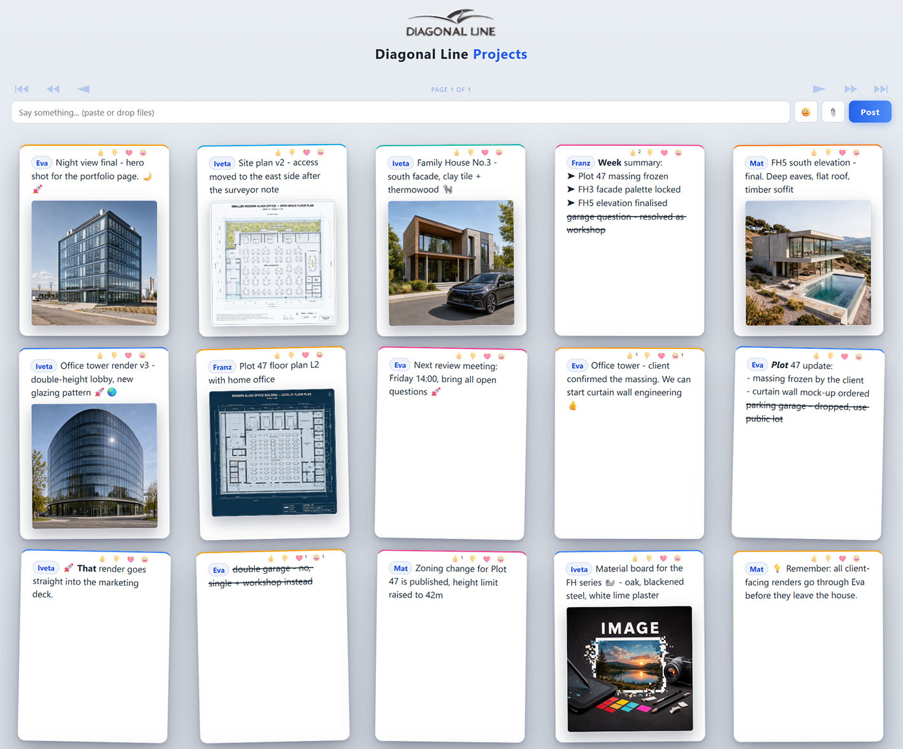
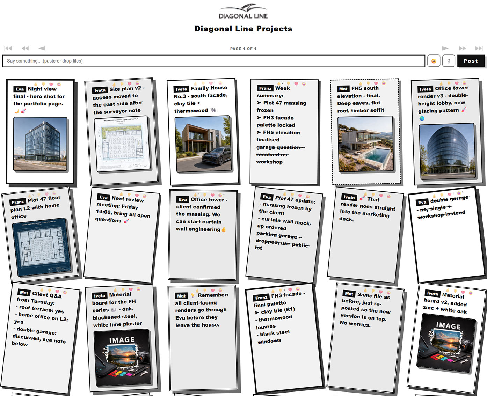

A file share, a chat and a bulletin board on one page — no login needed by default, no database. Just one text file.
Windows: download tiltboard.exe from the latest release, put it next to an optional config.json and double-click. A missing config is created with sensible defaults on first start; the board then answers at http://localhost:8000.
Any OS: clone the repo (or grab a single app.py) and run it — Python 3.9+, zero dependencies.
git clone https://github.com/xeedee-creator/tiltboard.git python tiltboard/app.py # → http://localhost:8000
Open the page from any computer on your network (the LAN address is printed at startup), post, attach files, done.



n:, u:, f:, c: prefixes combine as AND).chat.txt; attachments in a plain folder. Back it up with any sync tool, move the board by copying two things.pass_full_access / pass_read_only: theme-styled login dialog, read-only visitors can see/download/rate but never post or delete. Failed attempts are logged.server_1_sync + shared token at another Tiltboard: posts, ratings, deletions and reordering mirror both ways with automatic file transfer — even after offline periods.Formatting: \bbold, \iitalic, \uunderline, ~~strikethrough~~ — stackable in any order; plain text URLs (http/https/ftp) become clickable and open in a new tab. A built-in emoji picker ships with every page.
Your own header: drop an optional header.html next to the app — it replaces the default top banner with your company name, logo etc., styled to match any theme, shown even on the login screen.
Mobile ready: below ~700 px the board collapses to a single column with compact bars — no second app needed for phones and tablets.
Made by an AI agent in LM Studio Bionic (Qwen3.8-27B-Coder, GGUF on desktop hardware) — from first version to this release in a couple of weeks. See the README’s About section for the full story and per-model speed statistics.